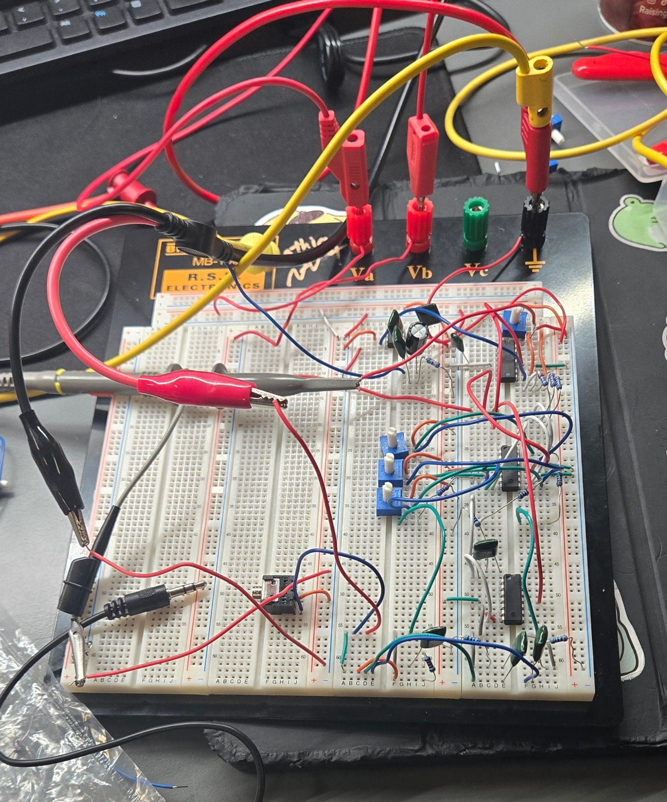
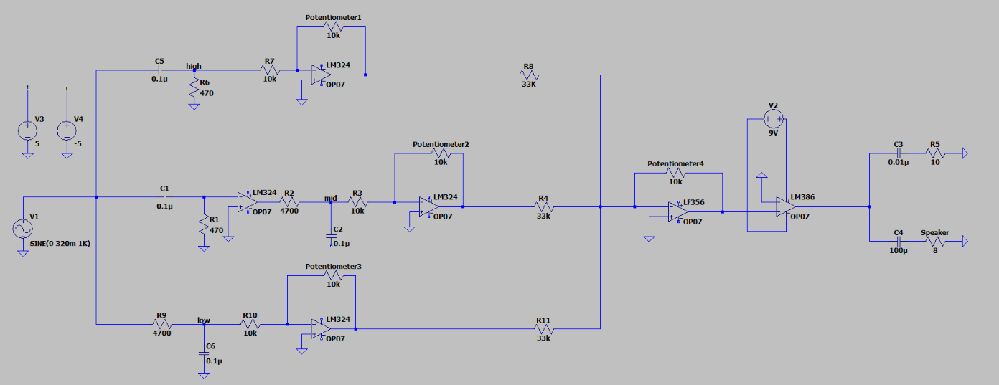
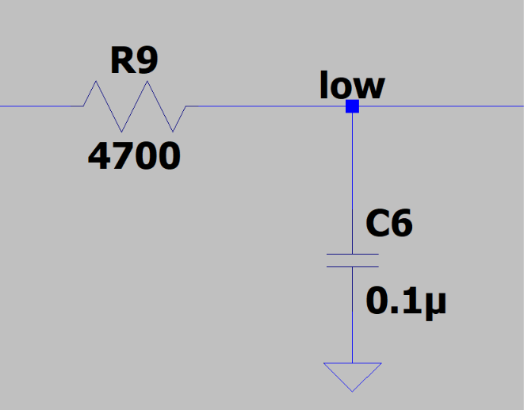
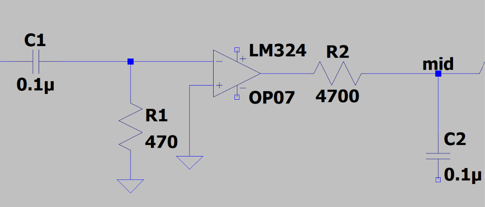
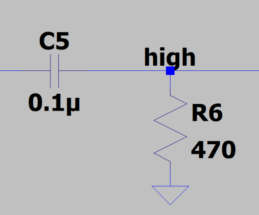
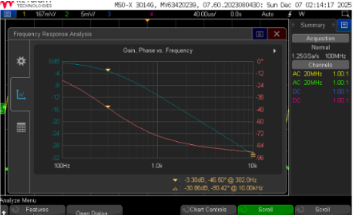
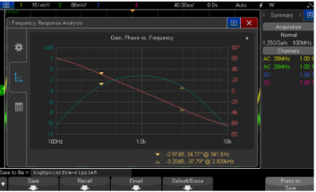
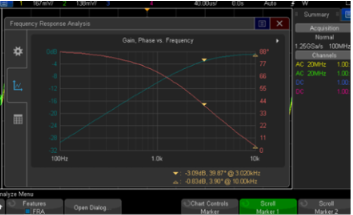

Analog audio equalizer
- Nov to Dec 2025
- ECE 20007 Final Project
- LTspice, oscilloscope, multimeter
Overview
I designed, prototyped, and tested an analog signal processing system for real-time audio shaping and power amplification. The system splits an input signal into bass, mid-range, and treble bands. Each band has adjustable gain. The bands are recombined to drive a physical speaker.

Why it matters
A circuit that works in simulation can still fail on the bench. I designed this one in LTspice, built it, and measured it against targets for each band and for power.
Schematic
Passive RC networks isolate the bass, mid, and treble bands. LM324 inverting amplifier stages set the gain of each band. An LF356 inverting summing amplifier merges the bands and adds master volume control. An LM386 power amplifier drives an 8 ohm speaker with over 580 mW.

Full schematic of the analog audio equalizer
Filter design and testing
I checked each band's cutoff with the oscilloscope's Frequency Response Analysis function. It sweeps the input and shows gain and phase on the trace.

Bass
Low-pass filter
302 Hz measured | 320 Hz target

Mid
Band-pass filter
341.5 Hz to 2.93 kHz measured | 320 Hz to 3200 Hz target

Treble
High-pass filter
3.02 kHz measured | 3200 Hz target

Low pass FRA

Mid pass FRA

High pass FRA
Results
All three bands stayed within tolerance at minimum and maximum gain. They attenuated to near silence and amplified cleanly at full volume.
| MEASUREMENT | VALUE |
|---|---|
| Minimum gain (100 Hz) | 14.4 mV RMS |
| Maximum gain (100 Hz) | 95.04 mV RMS |
| Ripple sweep across passband | 10.18 mV total |
| Power amplifier output (8 ohm load) | 2.16 V RMS |